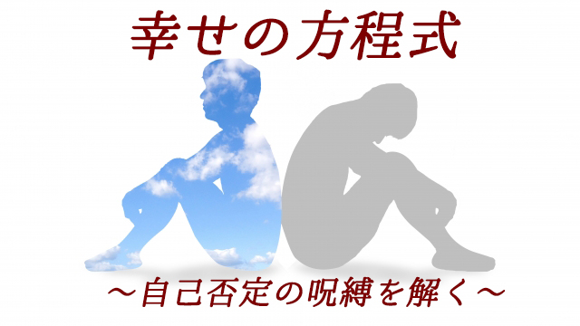

前回までの記事で私たちは多かれ少なかれ親からどう育てられたか、どんな価値観を植えつけられたかに強い影響を受けてしまうことをお話しました。
そして我が子にも同じような「教育（しつけ）を施してしまいがちです。
ところで親が意図せずして子どもに与えてしまう、もっともよくない影響とは何でしょう。
言い方を変えます。
親は子どものためを思って色々なしつけ、教えを子どもに伝えるものですが、それら「良かれ」と思って伝えるしつけや教訓がかえって子どもにマイナスの影響を与えることがあります。
その「マイナス」とは何でしょうか？
それは「自己否定感」という問題です。
私たちはたいてい幼いころから親から次のように言われてきたのではないでしょうか。
「他人のモノを盗っちゃダメでしょ」
「自分ばかりそれ（オモチャなど）で遊んでいないで人にも貸してあげなさい」
「好き勝手ばかりしないで周りのことも考えなさい」
「ケンカしないで仲良く遊びなさい」
「自己中心的な子になっちゃダメでしょ」
これらの親のセリフは一見して何も悪いところはないように見えます。幼い子どもはワガママで自己中心的で己の欲望のまま行動しようとするからです。
ただ、これらの言葉（しつけ）によく注目するなら次のことに気づくでしょう。
それは、どれも「他者目線」による自己の行動への「禁止」を意味しているということ。
すなわち自分よりも他人を優先すること。個人の欲望よりも社会のルールに従うことを強く望んでいる言葉だということです。
社会のルールを強調すると健全な欲求も育たない
自己中心がダメというのは、己の欲望のままに動くことで他者に迷惑をかけたりひいては社会秩序を脅かすことにならないようしなさいという意味であって、自分のやりたいこと－仕事や趣味、特技などを活かして充実感を得ること－まで禁じているものではありません。
しかし、幼いころにあまり厳しく「自己中心」をとがめられると私たちは「好きなこと」「やりたいこと」を自由にやることはいけないことだという「教訓」を学んでしまいます。そしてこれが超自我（内面化された規範）としてしっかり形成されると、本人の表面的意志だけでは解除が難しいものになってしまいます。
特に日本のように、周囲（環境や他者）に同調することや他者に配慮することを過度に求められる社会では「好きなことを追究すること」「自由に自己実現を目指すこと」は、「勝手な奴」「空気を読めない人」などのレッテルを貼られがちです。
つまり自分を伸ばすための健全な欲求でさえ罪悪感を感じてしまうということです。そして「好きなこと」より社会が認めるような、用意されたレールに従う道を選んでしまう。
結果として本当の人生を歩んでいないような自己不全感、無力感を抱えてしまうのです。
多くの人が人生に幸福を感じられない理由です。
自己肯定なしに幸せはあり得ない
さて、ここでもう一度最初の問いに戻ってみましょう。
親は「子どもに良かれ」と思って行うしつけや教えが子どもにマイナスの影響を与えるとしたら、どういうマイナスなのかという問いでした。
それは「自己より他者を優先する」こと。自己中心を恐れるあまり、子どもの「あるがまま」を否定してしまうこと。それによって子どもの心に「自己否定感」が植え付けられてしまうことです。
「～してはダメ」という禁止命令を連発することによって子どもの自己肯定感は低下していくのです。
自己肯定感なしに人は幸福にはなり得ません。
では親はどうすれば良いのでしょう。
答えはシンプルです。
しつけに際しては、
社会のルールを身につけさせることと本人の個性を伸ばすことの２つを同時並行で行うということです。そしてそのことに自覚的であることです。要するに罪悪感をもたせないように配慮するということです。
たとえば「ワガママはダメ」と言う場合、それが他者を害したり、秩序を乱すような行為だからダメとハッキリ自覚して言うことが大事です。あくまで「社会のルール上それは良くないよ」と言っているだけであって、絶対的な善悪の問題ではないと分かっていなければならない。
「ワガママはダメ」「自己中心はダメ」というとき親はえてして「それが絶対的真実」であり「人として当然のあり方だ」と思いこみ過ぎているものです。
そうなると子どもは自分の「ありのまま」を出すことは悪いことだと刷り込まれてしまいます。
しかし自分の好きなこと得意なことに熱中することはワガママでしょうか。人間が自分の才能や個性を輝かせるためには、時として周囲の状況が見えなくなるほど集中し夢中になる瞬間があるものです。それは一見ワガママに見えるかも知れませんが必要なことでもあります。
子どもが“我が意のまま”自分の欲求（生きる意欲）を追究するスぺース（自由）を与えなければならないのです。
親は我が子が社会のルールから外れることばかり恐れてつい否定的言葉を言いがちです。それが子どもの自己否定につながらないよう、同時に子どもの個性、才能を認め肯定することも忘れないようにしつけなければなりません。
我が子の幸福には自己肯定感が必要だということを常に頭に置いて向き合って欲しいと思います。